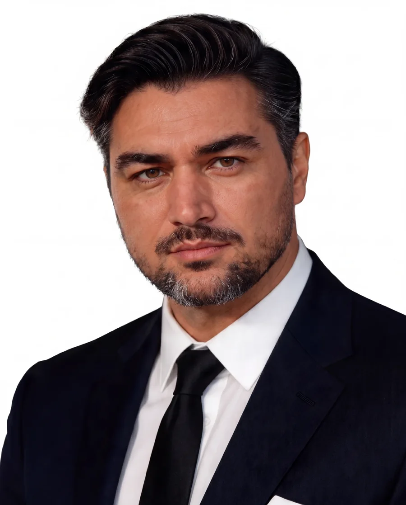
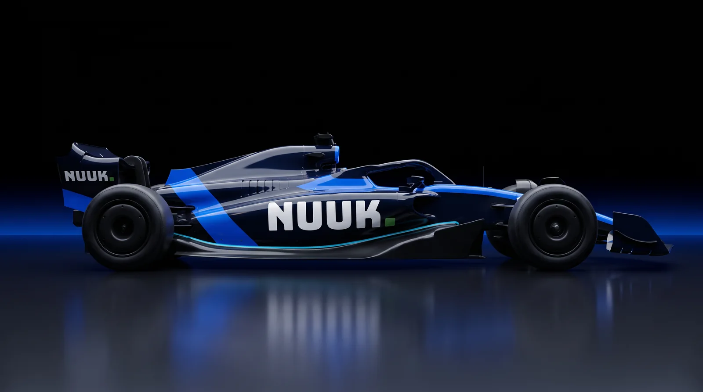
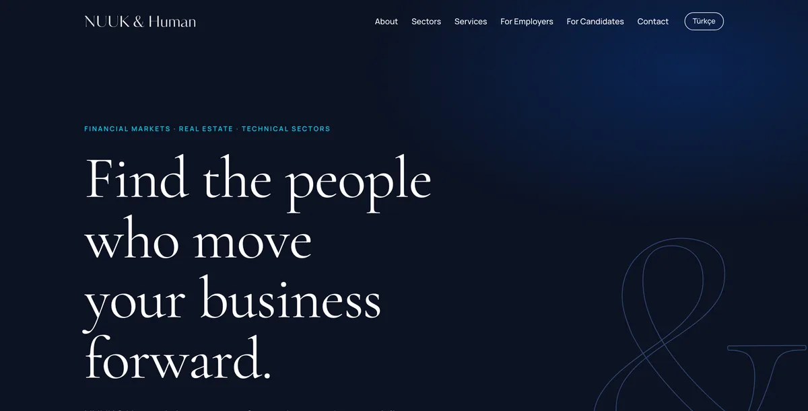

Ahmet S.
Ozturk
Kurucu, NUUK — Yapay Zekâ ve Fintech TeknolojileriFounder, NUUK — AI & Fintech Technologies
Sistematik trading araştırması · Trading teknolojisi · Piyasa istihbaratıSystematic trading research · Trading technology · Market intelligence
NUUK’ta yapay zekâ destekli finans teknolojileri geliştiriyorum: sistematik strateji araştırması, kendi trading terminalimiz ve yatırımcılar için piyasa istihbaratı. Arkasında Londra, İstanbul ve Dubai’de 17 yıllık FX ve CFD piyasa deneyimi var.At NUUK I build AI-driven financial technology: systematic strategy research, our own trading terminal and market intelligence for investors. Behind it are 17 years in FX and CFD markets across London, Istanbul and Dubai.

VizyonVision
Piyasa tecrübesini yapay zekâ ile ölçeklenebilir finans teknolojisine dönüştürüyorum.Turning market experience into AI-driven financial technology that scales.
FXCM Londra’dan IKON Finance’teki Uluslararası FX Başkanlığı’na, ardından sekiz yıl boyunca 700’ü aşkın trader’a hizmet veren kendi müşteri ve aracı kurum ortaklığı işime kadar piyasaların her katmanında çalıştım.From FXCM in London to Head of International FX at IKON Finance, then eight years running my own client and broker-partnership business serving 700+ traders, I have worked every layer of the market.
NUUK bu deneyimi teknolojiye çeviriyor: disiplinli risk kurallarıyla çalışan sistematik araştırma, kendi geliştirdiğimiz trading altyapısı ve Türkiye ile Körfez’deki yatırımcılar için anlaşılır piyasa istihbaratı.NUUK turns that experience into technology: systematic research built on disciplined risk rules, trading infrastructure we develop in-house, and clear market intelligence for investors across Türkiye and the Gulf.
FX, altın, endeks ve dijital varlıklarda sistematik strateji geliştirme ve walk-forward test.Systematic strategy development and walk-forward testing across FX, gold, indices and digital assets.
Atlanamayan risk korumasına sahip NUUK Terminal ve MetaTrader altyapısı.NUUK Terminal with a non-bypassable risk guard, plus MetaTrader infrastructure.
Günlük piyasa kapsamı ve her rakamın kaynağı belirtilmiş araştırma içerikleri.Daily market coverage and research with the source of every figure stated.
NUUK ekosistemiThe NUUK ecosystem
NUUK; FX, altın, endeks ve dijital varlıklar üzerinde disiplinli piyasa araştırması ve sistematik strateji geliştirme girişimi. Her sistem; pozisyon büyüklüğü, maruziyet ve drawdown kurallarıyla tasarlanıyor.NUUK is a markets-research and systematic-strategy venture across FX, gold, indices and digital assets. Every system is built around explicit rules for position size, exposure and drawdown.
nuukquant.com
Günlük piyasa kapsamıDaily market coverage
DIFC merkezli kurumsal site: piyasa notları, araştırma ve eğitim içerikleri; her rakamın kaynağı ve yöntemi belirtilir.The DIFC-based company site: market notes, research and education, with the source and method stated for every figure.
Siteyi açOpen site
İşe alım ve İK danışmanlığıRecruitment & HR advisory
Finansal piyasalar, gayrimenkul ve teknik sektörlere odaklı uzman işe alım; TR/EN yayında. Burcu Şarlı Öztürk ile birlikte kuruldu.Specialist recruitment for financial markets, real estate and technical sectors; live in EN/TR. Co-founded with Burcu Şarlı Öztürk.
Siteyi açOpen siteAraştırma terminaliResearch terminal
Kendi araştırmam için geliştirdiğim masaüstü terminal: MT4 matematiğiyle sanal işlem, zorunlu stop-loss ve atlanamayan risk koruması. Geliştirme aşamasında.A desktop terminal I build for my own research: MT4-exact paper trading, mandatory stop-loss and a risk guard that cannot be bypassed. In development.
YolculukTrack record
Dubai, UAE
KurucuFounder
- FX, kıymetli madenler, endeksler ve dijital varlıkları kapsayan bir piyasa araştırma girişimi.A markets-research venture covering FX, precious metals, indices and digital assets.
- Günlük piyasa kapsamı yayınlıyor; MetaTrader 4/5 ve TradingView üzerinde pozisyon büyüklüğü, maruziyet ve drawdown kurallarıyla sistematik araştırma yürütüyorum.Publishes daily market coverage and runs systematic research on MetaTrader 4/5 and TradingView, with strict rules on position sizing, exposure and drawdown.
Istanbul, TR
Kurucu Ortak — Müşteri Kapsama ve Aracı Kurum Ortaklıkları (IB)Co-Founder — Client Coverage & Broker Partnerships (IB)
- Türk bireysel ve yüksek net değerli müşterileri düzenlenmiş aracı kurumlara (Tickmill, Saxo Bank, A1 Capital, Midas) yönlendirdim; onboarding, aktivasyon, günlük kapsama ve elde tutmayı yönettim.Referred Turkish retail and HNW clients to regulated brokers (Tickmill, Saxo Bank, A1 Capital, Midas) and handled onboarding, activation, day-to-day coverage and retention.
- Portföyü 700+ aktif müşteriye ve 26M$+ yatırıma büyüttüm; yeni işin çoğu mevcut müşteri tavsiyelerinden geldi.Grew the book to 700+ active clients and USD 26M+ in deposits; most new business came from existing-client referrals.
- Sekiz yılda 2,5M$ gelirin arkasındaki IB, rebate ve gelir paylaşımı anlaşmalarını müzakere ettim.Negotiated the IB, rebate and revenue-share agreements behind USD 2.5M of revenue over eight years.
Istanbul & London
Uluslararası FX BaşkanıHead of International FX
- Londra ve İstanbul'da uluslararası FX müşteri kapsamasını, gelir hedefi, kazanım ve elde tutma sorumluluğuyla yönettim.Ran international FX client coverage across London and Istanbul with full responsibility for revenue targets, acquisition and retention.
- Uluslararası portföyü iki yılda %27 büyüttüm.Grew the international book by 27% in two years.
London · Istanbul
Kurumsal piyasalarda yükselişBuilding the brokerage foundation
- ALB Securities — Finans ve Hazine Uzmanı (2013–2014): yüksek değerli müşteriler için likidite analizi, kur maruziyeti takibi.Finance & Treasury Specialist (2013–2014): liquidity analysis and currency-exposure monitoring for high-value clients.
- Tacirler Securities — Döviz Piyasası Uzmanı (2011–2013): FX işlemleri, makro olaylarda müşteri danışmanlığı.FX Market Specialist (2011–2013): FX execution and client advice through macro events.
- FXCM — Finansal Ürün Satışı, Londra (2009–2011): müşteri kazanımı, onboarding ve platform eğitimi.Financial Product Sales, London (2009–2011): acquisition, onboarding and platform training.
Daha öncesi: Finans Stajyeri, Toro Group of Companies, Toronto (2007–2008).Earlier: Finance Intern, Toro Group of Companies, Toronto (2007–2008).
UzmanlıkExpertise
İş geliştirmeBusiness development
- Müşteri kazanımı ve elde tutmaClient acquisition & retention
- İlişki yönetimiRelationship management
- IB ortaklıklarıIB partnerships
- Ticari müzakereCommercial negotiation
PiyasalarMarkets
- FX ve CFD satışıFX & CFD sales
- Dijital varlıklarDigital assets
- Piyasa ve makro analizMarket & macro analysis
- Hazine ve likiditeTreasury & liquidity
AraçlarTools
- Bloomberg Terminal
- MetaTrader 4/5 · MQL4/5
- TradingView · Pine Script
- Trading CRM
OtomasyonAutomation
- Sistematik backtestSystematic backtesting
- n8n
- Excel · Google Sheets
- AI destekli araştırmaAI-assisted research
Sık sorulan sorularFrequently asked questions
NUUK ne yapar?What does NUUK do?
NUUK, Dubai DIFC merkezli bir yapay zekâ ve fintech şirketidir: sistematik strateji araştırması, kendi trading terminali ve yatırımcılar için piyasa istihbaratı geliştirir. Aracı kurum değildir ve müşteri parası tutmaz.NUUK is an AI and fintech company based in Dubai's DIFC. It builds systematic strategy research, its own trading terminal and market intelligence for investors. It is not a broker and does not hold client money.
Yatırım tavsiyesi veriyor musunuz?Do you give investment advice?
Hayır. Bu sitedeki ve NUUK kanallarındaki her içerik genel piyasa yorumu ve eğitim amaçlıdır; kişisel yatırım tavsiyesi değildir. Kaldıraçlı ürünlerde hızlı para kaybetme riski yüksektir.No. Everything on this site and in NUUK's channels is general market commentary and education, not personal investment advice. Leveraged products carry a high risk of rapid loss.
Hangi konularda iş birliği yapıyorsunuz?What do you collaborate on?
Aracı kurum ve likidite sağlayıcı ortaklıkları, trading teknolojisi projeleri, kurumsal yatırımcı eğitimi ve Türkiye ile Körfez pazarlarına yönelik iş geliştirme.Broker and liquidity-provider partnerships, trading-technology projects, institutional investor education and business development across Türkiye and the Gulf.
Size nasıl ulaşabilirim?How can I reach you?
E-posta en hızlı yoldur: ahmet@ahmetsozturk.com. WhatsApp ve LinkedIn bağlantıları iletişim bölümündedir. Genellikle bir iş günü içinde yanıt veririm.Email is fastest: ahmet@ahmetsozturk.com. WhatsApp and LinkedIn links are in the contact section. I usually reply within one business day.
CV'nizi paylaşıyor musunuz?Do you share a CV?
Bu sitede CV yayınlanmaz. Kariyer özeti yukarıdaki Yolculuk bölümünde, güncel profil LinkedIn'dedir.No CV is published on this site. The career summary is in the Track record section above and the current profile is on LinkedIn.
İletişimContact
Birlikte inşa edelim.Let's build together.